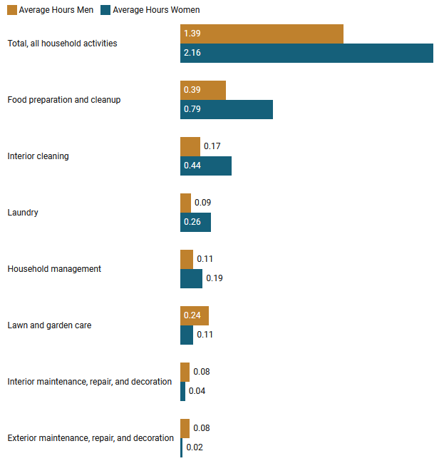

Are you a woman who cares about both your career and having children - or do you love someone who does? In the last few decades, more and more women have entered the workforce.
But women are still spending more time on household activities, and on total work. This creates a toll for women all over the world.
Women Spend More Time on Unpaid Work Across the World
The time women spend on unpaid work is almost 50% more than the time men spend on unpaid work on average.
In all OECD countries, women spend more time on unpaid work than men do.
Time spent on unpaid work by gender, OECD data, 2022
Source: OECD website
Women Spend More Time on Total Work Across the World
The total work hours, paid and unpaid together, of women is higher than men, all over the world (except Mexico).
Total time spent working by gender, OECD data, 2022
Source: OECD website
Women Have a Higher Household Burden, Even If Fully Employed
Women employed full-time in the U.S spend more time in household activities than men employed full-time, and also helping and caring for other household members.
Time spent on households by gender by employment status in the U.S., 2019
Source: U.S. BUREAU OF LABOR STATISTICS Website
Women Spend More Time On Most Time-Consuming Household Activities
Women in the U.S spend 50% more time in household activities than men.
The only household activities in which men spend more time are the shorter traditionally male gendered activities like lawn work and home repairs.
Time spent on households per activity, by gender in the U.S., 2019
Source: U.S. BUREAU OF LABOR STATISTICS Website